화약류관리기사 (2005-03-20 기출문제)
1과목: 일반화약학
1. 화약 중 초석은 성분이 순수한 것이어야 한다. 다음 중 품질을 저해하는 것이 아닌 것은?
- Na
- Cu
- Cl
- Mg
(정답률: 알수없음)

2. 다음 화약류 중 자연분해의 경향이 없는 것으로만 나열된 것은?
- 흑색화약, 무연화약, 피크린산
- 니트로글리세린, 니트로글리콜, 니트로셀룰로오스
- 질산암모늄 유제폭약, 카알릿, TNT
- 테트릴, DDNP, 다이너마이트
(정답률: 알수없음)
3. 약포간의 최대거리(ℓ) 152mm, 약포의 직경(d) 38㎜ 일 때의 순폭도는?
- 3
- 4
- 5
- 6
(정답률: 100%)
4. 다음 화약 중 제조 후 1년이 경과한 후 유리산 및 내열시험을 하여야 하는 것으로 나열된 것은?
- 무연화약, TNT
- TNT, 피크르산
- 피크르산, 무연화약
- 무연화약, 다이너마이트
(정답률: 알수없음)
5. 다음 화약류 중 화공품에 해당하는 것은?
- 염소산칼륨, 질산소다
- 공업뇌관, 실포 및 공포
- 흑색화약, 무연화약
- 다이너마이트, 피크린산
(정답률: 알수없음)
6. 다음 중 기폭약이 아닌 것은?
- 뇌홍
- 아지화납
- DDNP
- DNN
(정답률: 알수없음)
7. 산소 공급물로 구성되어 있지 않는 것은?
- KNO3 , NH4ClO4
- NaNO3, KClO4
- NH4NO3, BaSO4
- NaClO4, KClO3
(정답률: 70%)
8. 테트릴(Tetryl)의 분자구조식은?
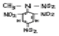
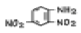
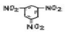
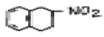
(정답률: 알수없음)
9. 슬러리(slurry)폭약의 조성과 무관한 것은?
- 질산암모늄
- TNT
- NaCl, 경유
- 물
(정답률: 알수없음)
10. 화약류를 법적으로 분류시 해당하지 않는 것은?
- 화약
- 폭약
- 화공품
- 탄약
(정답률: 알수없음)
11. 화약류의 중요한 특성으로 가장 거리가 먼 것은?
- 폭파효과
- 취급시 안정도
- 체적
- 저장성
(정답률: 알수없음)
12. EMX에 대한 설명으로 옳지 않은 것은?
- 유화제, 유화안정제, 가연제, 중공구체, 산화제용액을 혼합한 폭약이다.
- 유화제는 HLB의 값이 낮은 친유성 계면활성제를 사용한다.
- 유중수적형으로 물을 함유하기 때문에 기폭시 전폭약을 사용하여야 한다.
- 산화제는 질산암모늄을 사용하고 그 외 금속의 질산염이나 과염소산염도 사용한다.
(정답률: 알수없음)
13. Dautriche 검속법에 의해 폭약의 폭발속도를 시험하고자할 때 A, B 간의 거리를 10cm,도폭선의 폭속 5,100m/sec, 연판상의 상적(傷跡)의 길이가 4.8cm 이라면 폭속은?
- 4,510 m/sec
- 5,120 m/sec
- 5,310 m/sec
- 6,520 m/sec
(정답률: 알수없음)
14. 다음 중 후가스가 가장 양호한 제품은?
- 다이너마이트
- 함수폭약
- 초유폭약
- 초안폭약
(정답률: 알수없음)
15. 맹도(brisance)에 대한 설명 중 옳은 것은?
- 폭발이 용이함
- 감응에 의한 폭발
- 탄동진자 시험법으로 측정
- 화약류가 폭발하여 최대의 압력을 나타낼 때의 시간의 구배
(정답률: 100%)
16. 주석 또는 납관 내에 용융된 폭약을 채워서 선 모양으로 뽑아낸 것으로 폭속은 5500m/sec 이상이며 주로 전폭용과 폭속측정용으로 쓰이는 도폭선은?
- 제3종 도폭선
- 제2종 도폭선
- 제1종 도폭선
- 제0종 도폭선
(정답률: 알수없음)
17. 목분 1㎏이 연소하면 약 961ℓ의 산소가 부족하여 산소 공급제로 KNO3를 사용한다. 이 때 첨가할 KNO3의 량은? (단, 원자량 K=39, N=14, O=16 이고 KNO3 1㎏ 당 산소는 277ℓ발생한다.)
- 1.5㎏
- 2.5㎏
- 3.5㎏
- 4.5㎏
(정답률: 알수없음)
18. 다음 물질 중 화염 증대제인 것은?
- 황화안티몬
- 면약
- 흑색화약
- 수산화암모늄
(정답률: 60%)
19. 8호 뇌관의 둔성폭약시험에서 사용하는 둔성폭약의 조성은?
- TNT:탈크 = 70:30
- TNT:탈크 = 60:40
- TNT:탈크 = 50:50
- TNT:탈크 = 40:60
(정답률: 알수없음)
20. 한국산업규격에서 교질다이너마이트의 충격감도 불폭점은?
- 10㎝ 이하
- 15㎝ 이상
- 30㎝ 이상
- 50㎝ 이상
(정답률: 91%)
2과목: 발파공학
21. 공경 30mm의 발파공을 공간간격 10cm로 4공을 집중발파할때의 저항선 비(比)는 얼마인가? (단, 장약장은 공경의 10배로 한다.)
- 3.66
- 2.93
- 1.83
- 0.91
(정답률: 알수없음)
22. 다음 수중천공발파 설계중 틀린 것은?
- 충분한 파쇄를 위하여 경사공의 비장약량을 0.5kg/mm3로 한다.
- 진흙으로 암반이 덮혀있는 경우, 진흙층의 두께 m당 0.02kg/m3의 비장약량을 증가시킨다.
- 암석층을 보정하기 위해서 계단높이 m당 0.03kg/m3의 비장약량을 증가시킨다.
- 수압을 보정하기 위해서 수심 m당 0.01kg/m3의 비장약량을 증가시킨다.
(정답률: 알수없음)
23. 탄성파의 전파속도가 3200m/sec인 암반을 발파했을 때 "A"지점에 전달된 진동속도가 10mm/sec이고 폭원과 "A"지점 사이인"B"지점의 주파수가 80Hz였다. "A"지점에 전달되는 진동속도를 5mm/sec로 제어하기 위해서 "B"지점에 형성해야 될 에어겝(불연속면)의 깊이는?
- 약 10.0m
- 약 12.5m
- 약 14.2m
- 약 16.4m
(정답률: 알수없음)
24. 발파에 의한 지반진동속도 1cm/sec가 밀도 2.0t/m3, 탄성파의 전파속도 2500m/sec인 매질 A 에서 밀도 2.5t/m3, 탄성파의 전파속도 3000m/sec인 매질 B 로 입사될 경우 매질 B 에 투과되는 진동속도는 얼마나 되겠는가? (단, 거리에 따른 진동속도의 감쇠는 무시한다.)
- 2.5cm/sec
- 2.0cm/sec
- 1.6cm/sec
- 0.8cm/sec
(정답률: 알수없음)
25. Pre-splitting과 Trim blasting의 특징에 관한 설명 중 틀린 것은?
- Trim blasting은 주발파 부분이 점화된 후 점화한다.
- Pre-splitting시 저항선은 무한하다고 볼 수 있다.
- Pre-splitting시 천공간격은 Trim blasting에서 보다 넓게 한다
- Trim blasting시 저항선은 공간격보다 조금 길게 계획 한다.
(정답률: 알수없음)
26. 아래와 같은 V-cut 발파를 실시하였을 때 파쇄암의 최대 비산속도(V)는 대략 얼마인가? (단, 암석밀도는 2.7 t/m3, 장약량은 0.75 kg/공이며, V(m/sec)는 Dupont사의 실험식 V=34(LD)-0.5를 이용한다. 여기서 LD는 폭약 단위 중량 당의 채석 중량(t/kg)이다.)
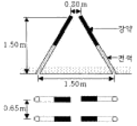
- 29 (m/s)
- 35 (m/s)
- 42 (m/s)
- 48 (m/s)
(정답률: 알수없음)
27. 폭약직경 및 천공간격에 따른 발파효과를 설명한 것으로 틀린 것은?
- 부분장전보다 밀폐장전이 발파효과는 크다.
- 소구경보다 대구경 천공 장약시 천공간격을 넓힐 수 있다.
- 니트로글리세린을 함유한 질산암모늄폭약은 천공간격이 좁아도 사압현상은 없지만, 니트로글리세린을 함유하지 않은 질산암모늄폭약은 천공간격 30cm에서도 제2약포는 불폭될 수 있다.
- 철관으로 시험발파를 할 때 철관안의 공기속을 통해 간느린 충격파가 폭약 속의 충격파를 방해하여 둔감하게 함으로써 완전폭발을 하지 못하고 잔류하는 현상이 생긴다. 이러한 현상을 Recementation 현상이라 한다.
(정답률: 알수없음)
28. 자유면에 평행한 여러 개의 발파공을 구멍지름, 공간간격, 천공길이를 동일하게 하여 전기뇌관으로 동시에 발파하는 방식은?
- 제발발파
- 집중발파
- MS 발파
- 확저발파
(정답률: 알수없음)
29. 다음과 같은 조건하에서 암석갱도를 굴진하려고 한다. 이 때의 발파당 폭약량은?
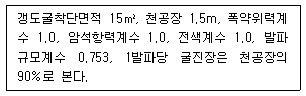
- 1.37kg
- 2.74kg
- 13.70kg
- 27.74kg
(정답률: 8%)
30. 노동부고시, 발파작업 표준안전지침 제5조 4항에 의하면 주택, 아파트에 대한 진동기준치는 얼마인가?
- 0.2 cm/sec
- 0.3 cm/sec
- 0.4 cm/sec
- 0.5 cm/sec
(정답률: 알수없음)
31. 전기발파에서 뇌관을 직렬회로로 연결했을 때 회로 전부가 불발할 경우가 있다. 다음 원인 중 틀린 것은?
- 발파기의 결선부와 모선이 접촉불량할 때
- 발파용량이 적은 발파기를 사용할 때
- 뇌관의 각선이 단락되었을 때
- 손상되고 절연저항이 나쁜 발파모선을 사용할 때
(정답률: 알수없음)
32. 터널발파에서 천반공, 벽공 및 바닥공과 같은 윤곽공 들은 윤곽 밖으로 경사져야 하는데 이것을 look-out이라 하며 터널은 설계된 면적을 보유하게 된다. 터널발파의 천공장이 3m일 때 최대 얼마까지의 look-out를 허용하는가?
- 16cm
- 19cm
- 22cm
- 25cm
(정답률: 알수없음)
33. 계단식 발파설계시 저항선(burden)에 관한 설명으로 틀린 것은?
- 다중열 발파시 세번째 이후의 저항선은 첫번째 또는 두 번째 열보다 적게 된다.
- 성층 또는 층리(bedding)가 절개면쪽(벤치하부쪽)으로 가파르게 경사진 지층일 경우 저항선은 성층이 없는 지층에서 보다 크게 나타난다.
- 암괴(massive) 상태의 암반을 발파할 경우 절리가 발달한 경우에 비해 저항선을 크게 한다.
- 약경이 일정한 경우 저항선은 암석의 비중이 클수록, 폭약의 비중이 적을수록 작아진다.
(정답률: 알수없음)
34. 다음 중 암석의 파괴상황에서 약장약의 경우를 바르게 나타낸 것은? (단, W: 최소저항선, r: 누두반지름, α: 누두개구각도)
- W < r, α > 90°
- W > r, α < 90°
- W > r, α > 90°
- W < r, α < 90°
(정답률: 19%)
35. 연직 발파공을 이용하여 발파할 경우 발파공벽의 암석은 삼축응력 상태에서 소성파괴를 일으켜 파쇄대(Crushed Zone)를 형성한다. 발파전 공벽에 작용하는 접선방향응력 σθ=2MPa이 봉압으로 작용한다면 화약 폭발 시 몇 MPa의 압력이 공벽에 작용해야 파괴가 일어나는가? (단, 암석은 선형 Mohr-Coulomb 파괴 기준을 따르고 단축압축강도 σc = 150MPa, 내부마찰각 ø= 50°이다.)
- 1⑤.3MPa
- 143.5MPa
- 165.1MPa
- 186.5MPa
(정답률: 알수없음)
36. 다음 중 발파에 의한 소음의 저감 대책이 아닌 것은?
- 완전 전색이 이루어지도록 한다.
- 방음벽을 설치하여 소리의 전파를 차단한다.
- 역기폭 방법보다는 정기폭 방법을 사용한다.
- 벤치 높이를 줄이거나 천공지름을 작게한다.
(정답률: 알수없음)
37. 다음 표에서 말할 수 있는 사항으로서 옳은 것은 어느 것인가?
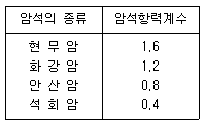
- 화강암은 현무암보다 발파 효과가 나쁘다.
- 석회암의 발파계수는 현무암의 경우보다 크다고 말할수 있다.
- 폭약위력계수 1, 전색계수 1인 폭약을 사용하여 약 1m3의 안산암을 발파할 때에는 약 0.8kg의 폭약이 필요하다.
- 동일 약량으로 발파하면 화강암은 석회암의 약 3배의 체적을 발파할 수 있다.
(정답률: 알수없음)
38. 임계약경(Critical Diameter)에 대한 설명 중 틀린 것은?
- 폭약의 폭굉이 전파하지 않는 최소 약경으로 한계 약경이라고도 한다.
- 폭약 1m3가 노천에서 완전히 폭발할 수 있는 최소의 약경을 말한다.
- 임계약경이 작을수록 제어발파 기능이 우수하다.
- 임계약경이 클수록 순폭도가 크다.
(정답률: 16%)
39. 폭약의 특성중 폭발시 동적효과에 가장 큰 영향을 주는 것은?
- 비중
- 가스발생량
- 내수성
- 폭발속도
(정답률: 알수없음)
40. 인장강도가 100kgf/cm2인 신선한 암반에 선균열(Pre-splitting)발파를 실시하기 위하여 직경 75mm 비트를 사용하여 발파공을 천공하였다. 발파공내에 작용하는 압력이 900kgf/cm2인 경우 발생되는 균열반경은?
- 12.5cm
- 23.7cm
- 37.5cm
- 42.7cm
(정답률: 알수없음)
3과목: 암석역학
41. 다음 중 지하공동, 갱도 또는 터널 굴착시 불량한 암반(Poor rock mass)으로 판정되는 경우는?
- RQD = 50-75%
- RMR = 21-40
- Q = 10-40
- 폭 4m의 터널이 6개월간 지보없이 견딜 수 있는 경우
(정답률: 알수없음)
42. 그림과 같이 두 수평 주응력이 작용하고 있는 균질탄성 암반내에 지름 5m의 원형단면의 수갱이 굴착되었다. A 지점에서 접선응력의 크기는?
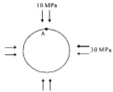
- 60 MPa
- 80 MPa
- 100 MPa
- 120 MPa
(정답률: 알수없음)
43. 다음과 같은 시편의 단면에 하중 6 ton이 작용할 때 응력이 크게 작용하는 순서대로 표시된 것은? (큰 것부터 작은 순서대로 나열된 것)
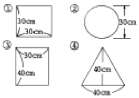
- ④①③②
- ②③①④
- ②④①③
- ③②①④
(정답률: 알수없음)
44. 그림에서 원 ①(점선)은 건조한 시료의 응력 상태를 나타낸다. 공극수압(pore water pressure)이 작용할 경우 Mohr Circle은?
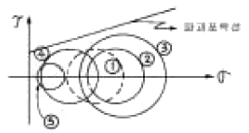
- ②
- ③
- ④
- ⑤
(정답률: 알수없음)
45. 다음 중에서 중간주응력을 고려한 파괴이론은?
- 응력원포락선설
- 내부마찰각설
- 분쇄이론
- 전단변형률에너지설
(정답률: 알수없음)
46. 응력은 벡터가 아닌 텐서량(Tensor Quantity)으로 설명된다. i = j 일 때 ij 로 표현하는 응력을 옳게 설명한 것은?
- i 방향에 수직한 면에 j 방향으로 작용하는 전단응력
- i 방향에 수직한 면에 j 방향으로 작용하는 법선응력
- i 방향에 평행한 면에 j 방향으로 작용하는 전단응력
- i 방향에 평행한 면에 j 방향으로 작용하는 법선응력
(정답률: 알수없음)
47. 다음 중 암석실험 결과에 대한 설명이 틀린 것은?
- 봉압이 증가하면 강도도 증가한다.
- 재하속도를 빠르게 하면 강도가 증가한다.
- 온도를 증가시키면 강도는 감소한다.
- 공극수압을 증가시키면 강도도 증가한다.
(정답률: 알수없음)
48. 암석에 적당한 진폭을 갖는 하중을 주기적으로 반복하여 여러차례 가하면 파괴가 일어나는데 이를 무엇이라 하는가?
- 연성파괴(ductile)
- 피로파괴(fatigue)
- 지연파괴(delayed)
- 취성파괴(brittle)
(정답률: 알수없음)
49. 현지암반의 초기응력측정법 중 수압파쇄법의 특징이 아닌 것은?
- 오버코어링(overcoring)작업이 불필요하다.
- 심도가 깊은 곳에도 적용이 가능하다.
- 암석의 탄성계수가 불필요하다.
- 시추공내의 생성균열을 측정할 필요가 없다.
(정답률: 알수없음)
50. 반발경도를 측정하기 위한 시험기는?
- Schmidt hammer
- Brinell 경도계
- Rockwell 경도계
- Vickers 경도계
(정답률: 알수없음)
51. 지름이 2cm인 원형 단면을 지닌 길이 10cm의 봉을 길이 방향으로 100kgf의 인장력을 가했을 때, 길이 방향의 인장변형률은 얼마인가? (단, 이때 이 물체의 길이 방향 영율(Young's modulus)은 3.185×105kgf/cm2 이다.)
- 10-2
- 10-3
- 10-4
- 10-5
(정답률: 알수없음)
52. 암반의 평판재하시험에서 하중을 가하는 순서는?
- 순응하중 → 계단하중 → 크리프하중 → 반복하중
- 계단하중 → 순응하중 → 반복하중 → 크리프하중
- 순응하중 → 계단하중 → 반복하중 → 크리프하중
- 계단하중 → 순응하중 → 크리프하중 → 반복하중
(정답률: 10%)
53. 아래 그림과 같이 무한 평면내에 존재하는 원형공동에 수직방향으로만 압력 p가 작용하고 있다. 이때 A점 부근에 집중되는 응력의 크기는 얼마인가? (단, 원형 공동은 완전 탄성체내에 존재한다고 본다.)
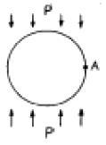
- p
- 2 p
- 3 p
- - p
(정답률: 알수없음)
54. 다음의 응력-변형율 곡선에서 구한 탄성계수(E)와 포아송비(ν)로 가장 적당한 것은?
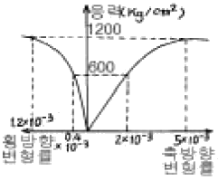
- E = 3 ×105 ㎏/cm2, ν= 0.20
- E = 2.4 ×105 ㎏/cm2, ν= 0.04
- E = 3 ×105 ㎏/cm2, ν= 0.04
- E = 2.4 ×105 ㎏/cm2, ν= 0.20
(정답률: 알수없음)
55. 그림과 같이 수평으로 압력 P가 작용하는 평판에 원형 공동을 굴착하였다. 최대 인장응력이 발생하는 위치는?
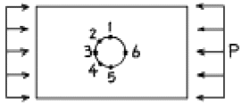
- 1
- 1과 5
- 3과 6
- 2와 4
(정답률: 알수없음)
56. 다음 중 빈칸에 적당한 것들로 되어 있는 것은?
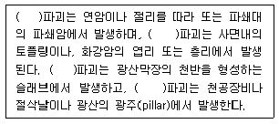
- 압축, 인장, 휨, 인장
- 전단, 인장, 인장, 휨
- 인장, 전단, 압축, 휨
- 전단, 인장, 휨, 압축
(정답률: 알수없음)
57. 미소 정육면체에 작용하는 응력이 그림과 같다면 최대주응력(maximum principal stress)은 얼마인가?
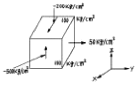
- 50 kg/cm2
- 100 kg/cm2
- -170 kg/cm2
- -530 kg/cm2
(정답률: 알수없음)
58. 암반의 평균 단위중량(γ)이 2.5ton/m3이면 200m 심도에 있어서 이론적인 수직응력(σz)과 수평응력(σx, σy)은 각각 얼마인가? (단, 암반은 균질 등방성이고, 포아송비는 0.25로 함)
- σz = 500kg/cm2, σx = σy = 250kg/cm2
- σz = 250kg/cm2, σx = σy = 150kg/cm2
- σz = 150kg/cm2, σx = σy = 50.5kg/cm2
- σz = 50kg/cm2, σx = σy = 16.7kg/cm2
(정답률: 알수없음)
59. St. Venant 모델의 구성 요소는?
- Slider와 Spring
- Slider와 dashpot
- Spring과 dashpot
- Slider와 Spring과 dashpot
(정답률: 알수없음)
60. 서로 직각인 두 방향에 수직응력이 작용할 때 경사면에 발생하는 법선응력(normal stress)에 대한 설명 중 옳은 것은?
- 법선응력은 전단응력이 최대로 되는 단면에서 최대로 된다.
- 법선응력은 전단응력이 최대로 되는 단면에서 최소로 된다.
- 법선응력은 전단응력이 0으로 되는 단면에서 0으로 된다.
- 법선응력은 전단응력이 0으로 되는 단면에서 최대 또는 최소로 된다.
(정답률: 알수없음)
4과목: 화약류 안전관리 관계 법규
61. 화약류 판매업자 결격사유에 해당되는 경우는?
- 기소유예 판결을 받은 사람
- 금고이상의 형의 집행유예선고를 받고 그 집행유예기간이 끝난 후 1년6개월이 경과한 사람
- 20세의 여자
- 사업을 개시한 후 정당한 사유 없이 1년이상 휴업의 사유로 허가취소처분을 받고 2년이 경과한 사람
(정답률: 알수없음)
62. 화약류 운반 신고필증에 대한 다음 설명 중 틀린 것은?
- 화약류를 운반하지 아니하게 된 때 신고필증을 반납해야 한다.
- 운반기간이 경과한 때에는 신고필증을 반납해야 한다.
- 운반을 완료한 때에는 신고필증을 반납해야 한다.
- 운반을 완료 한 때에도 발송지를 관할하는 경찰서장에게 신고필증을 반납하여야 한다.
(정답률: 알수없음)
63. 화약류저장소에 흙둑을 쌓는 경우의 기준으로 올바르지 못한 것은?
- 흙둑은 저장소 바깥쪽 벽으로부터 흙둑의 안쪽벽 밑까지 1m 이상의 2m 이내의 거리를 두고 쌓을 것
- 흙둑의 경사는 45°이하로 하고, 정상의 폭이 1m 이상으로 할 것
- 흙둑의 높이는 저장소의 지붕높이 이하로 할 것
- 흙둑의 표면에는 가능한 한 잔디를 입힐 것
(정답률: 알수없음)
64. 꽃불류의 발사용 화약에 점화하여도 그 화약이 폭발 또는 연소되지 아니하는 때에는 그 발사통에 많은 양의 물을 넣고 얼마이상 경과한 후에 꽃불류를 꺼내야 하는가? (단, 최소시간 임)
- 5분
- 10분
- 15분
- 30분
(정답률: 37%)
65. 화약류 양도·양수 허가와 관련한 설명중 옳지 않은 것은?
- 판매업자가 판매 목적의 화약류를 양도·양수할 때는 양도·양수허가가 필요없다.
- 사용장소가 특정되지 아니한 경우에는 양수자의 주소지관할 경찰서장의 허가를 받아야 한다.
- 화약류의 양도·양수허가 기간은 관할 경찰서장의 재량사항으로 1년이상 가능하다.
- 화약류의 수입허가를 받은 화약류의 수입과 관련하여 화약류를 양도·양수하는 경우에도 양수·양도허가가 필요없다.
(정답률: 알수없음)
66. 착암기를 이용하여 불발된 폭약을 제거하려고 한다. 불발된 천공으로부터 몇 cm이상 떨어져 평행으로 천공하여야 하는가?
- 70 cm
- 60 cm
- 50 cm
- 40 cm
(정답률: 28%)
67. 저장소별 화약류 최대저장량의 연결이 옳지 않은 것은?
- 지상 1급 화약류저장소 - 화약 80톤
- 간이 저장소 - 폭약 15kg
- 3급 저장소 - 화약 50kg
- 2급 저장소 - 화약 10톤
(정답률: 알수없음)
68. 사용허가를 받지 아니하고 화약류를 사용할 수 있는 경우가 아닌 것은?
- 광업법에 의하여 탐광계획 신고를 필하고 광물채취를 위하여 사용하고자 하는 사람
- 학교, 연구소 등 공인된 기관에서 실험용으로 법에 정한 수량을 사용하고자 하는 기관
- 건축·토목공사용으로 1일 동일한 장소에서 건설용타정총용 공포탄 300개를 사용하고자 하는 사람
- 영화 또는 연극의 효과를 위하여 1일 동일한 장소에서 원료화약 또는 폭약 15그램미만의 꽃불류 60개를 사용하고자 하는 사람
(정답률: 19%)
69. 지하에 설치하는 2급 저장소의 위치, 구조 및 설비기준과 가장 거리가 먼 것은?
- 안쪽 벽은 철근콘크리트로 할 것
- 저장소에는 피뢰장치를 할 것
- 저장소 내부는 판자로 하고 마루표면 또는 콘크리트 바닥에는 철물류가 나타나지 아니 하도록 할 것
- 언덕의 경사면 또는 터널 안쪽 벽에 홈을 파고 저장소를 설치할 때에는 그 저장소의 안쪽 벽을 콘크리트 또는 나무의 이중판자로 할 것
(정답률: 10%)
70. 다음 중 경기도 양평군에서 화약류를 폐기하고자 할 경우 필요한 절차는? (단, 제조업자가 제조과정에서 생긴 화약류를 그 제조소 안에서 폐기하는 경우는 제외)
- 경기지방청장에게 신고
- 양평경찰서장의 허가
- 경기지방청장의 허가
- 양평경찰서장에게 신고
(정답률: 알수없음)
71. 지하 1급 저장소의 지반 두께가 24m일 때 폭약은 얼마까지 저장할 수 있는가?
- 40톤 이하
- 35톤 이하
- 25톤 이하
- 17톤 이하
(정답률: 알수없음)
72. 다음 중 폭약 1톤의 환산 수량에 해당되지 않는 것은?
- 공포탄 200만개
- 총용뇌관 250만개
- 전기뇌관 100만개
- 미진동파쇄기 10만개
(정답률: 알수없음)
73. 다음 보안물건 중 3종 보안물건에 해당하지 않는 것은?
- 고압전선
- 변전소
- 선박의 항로
- 공장
(정답률: 알수없음)
74. 1급저장소와 보안물건간의 보안거리중 맞는 것은? (단, 저장된 폭약량은 19톤이며, 석유저장 시설이 있음)
- 110m 이상
- 160m 이상
- 210m 이상
- 130m 이상
(정답률: 알수없음)
75. 화약류를 운반하는 사람이 화약류 운반 신고필증을 지니지 않았을 경우 처벌 내용으로 맞는 것은?
- 200만원이하의 벌금
- 2년이하의 징역
- 150만원이하의 벌금
- 300만원이하의 과태료
(정답률: 알수없음)
76. 위험공실의 준방폭식 구조의 기준에 대한 설명 중 틀린 것은?
- 출입구는 방폭면에 설치 한다.
- 방폭면에는 되도록 큰 창을 설치 한다.
- 출입구 폭은 1.5m이하로 한다.
- 지붕은 방폭방향에 대하여 하향으로 경사지게 한다.
(정답률: 알수없음)
77. 화약류 판매업자는 장부의 기입을 완료한 날부터 몇 년간이를 보존해야 하는가?
- 1년
- 2년
- 3년
- 5년
(정답률: 40%)
78. 화약류관리보안책임자가 중대한 과실에 의해 폭발사고를 야기하여 10명의 인명을 사상한 경우 면허에 대한 행정처분은?
- 1월 효력정지
- 3월 효력정지
- 6월 효력정지
- 면허취소
(정답률: 알수없음)
79. 총포·도검·화약류등단속법에서 말하는 화공품에 속하지 않는 것은?
- 실탄 및 공포탄
- 자동차 긴급신호용 불꽃신호기
- 자동차 에어백용 가스발생기
- 시동점화용 무연화약탄
(정답률: 알수없음)
80. 운반신고를 하지 아니하고도 운반할 수 있는 것은?
- 총용뇌관 100만개
- 장난감용 꽃불류 500kg
- 미진동파쇄기 15000개
- 폭발천공기 1000개
(정답률: 알수없음)
5과목: 굴착공학
81. NATM의 보조공법중 막장의 안정, 용수대책 및 지반침하 대책으로 모두 이용할 수 있는 보조공법은 어느 것인가?
- 약액주입공법
- 동결공법
- 압기공법
- 웰포인트(well point)공법
(정답률: 알수없음)
82. 그림과 같이 단위중량이 1.8t/m3인 지반에 5m ×5m의 footing를 통해 100ton의 하중(Q)이 작용할 경우 지표아래 5m지점(A점)의 수직응력을 개략적으로 구하면 얼마인가?
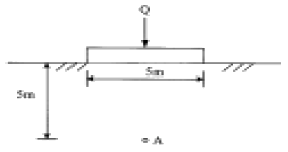
- 5.0t/m2
- 10.0t/m2
- 15.0t/m2
- 20.0t/m2
(정답률: 알수없음)
83. 숏크리트는 NATM 지보재로서 중요한 요소이다. 이의 합리적인 시공을 위하여 유의해야 할 사항 중 가장 관련이 적은 것은?
- 뿜어붙이기 압력
- 뿜어붙이기 각도 및 거리
- 탈락율
- 빔거푸집의 사용성
(정답률: 0%)
84. NATM 시공을 위한 지질조사에서 주목하지 않아도 되는 항목은?
- 숏트크리트 사용량
- 팽압(膨壓)의 유무
- 용수량 및 용수압
- 사태, 편압지형
(정답률: 알수없음)
85. 다음 중 접지압(contact pressure)에 대한 설명으로 틀린 것은?
- 접지압은 기초판의 강성과 토질에 따라 달라진다.
- 접지압에 대한 해석은 지반계수법과 탄성론적 해법으로 구분된다.
- 점성토 지반은 일정한계 이상의 접지압은 발휘되지 않는다.
- 사질토 지반에서 등분포하중이 작용할 때 기초판의 폭이 좁을수록 접지압은 평균화된다.
(정답률: 알수없음)
86. 절리암반층에 터널을 굴착한 후 시공할 수 있는 즉시지보재(immediate support)로서 가장 효율적인 것은?
- 강지보
- 와이어 메쉬
- 목재지주
- 록볼트
(정답률: 알수없음)
87. Q-시스템을 이용하여 폭 15m, 높이 11m인 고속철도터널의 천반에 설치할 록볼트의 길이를 결정하고자 한다. 이 터널의 굴착지보계수(ESR : Excavation Support Ratio)를 1 이라고 한다면 천반에서의 록볼트 길이는?
- 4.25 m
- 3.65 m
- 6.⑤ m
- 8.65 m
(정답률: 알수없음)
88. 다음 중 지하공간의 특성이 아닌 것은?
- 변온성
- 기밀성
- 방음성
- 방사능 차단성
(정답률: 20%)
89. 인버어트(invert) 설계에 관한 설명으로 옳지 않은 것은?
- 터널전체가 원형에 가까운 구조로 설계
- 전주위를 같은 두께의 단면으로 설계
- 측벽침하를 지지하는 모양으로 설계
- 인버트의 끝부분과 측벽기부와의 접합면은 축력 작용선이 사각이 되도록 설계
(정답률: 알수없음)
90. 다음 지하공간시설 중 일반적으로 가장 깊은 심도에 설치되어야 하는 것은?
- 수력발전소
- 압축공기 저장시설
- LPG 저장시설
- 농수산물 냉장, 냉동 저장소
(정답률: 알수없음)
91. 지하수면 이하의 실트질 모래에 대한 표준관입 시험시 실측된 N=20 이었다. 수정된 N치를 구하면 얼마인가?
- 14.5
- 15.5
- 16.5
- 17.5
(정답률: 알수없음)
92. 다음 중 암반의 지압을 측정하는 방법이 아닌 것은?
- Leeman 법
- 수압파쇄법
- Goodman-Jack 법
- flat-Jack 법
(정답률: 알수없음)
93. 원형공동의 천정부와 측벽부에서 각각 슬롯을 굴착하고 플랫잭을 사용하여 초기 응력을 측정한 결과, 천정부의 응력은 50 kg/cm2이고 측벽부의 응력은 100 kg/cm2이었다. 이 지점의 초기 수평 응력은?
- 31.25 kg/cm2
- 50 kg/cm2
- 72.25 kg/cm2
- 100 kg/cm2
(정답률: 알수없음)
94. 다음 중 일반적인 사면의 파괴 형상과 관계 없는 것은?
- 사면 저부 파괴
- 사면 선단 파괴
- 사면 외 파괴
- 사면 내 파괴
(정답률: 알수없음)
95. 음의 평사투영도에서 평면의 경사방향은? (단, 투영법은 상부 촛점 투영법이다.)
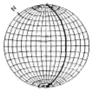
- 40°
- 50°
- 90°
- 130°
(정답률: 알수없음)
96. 등방성으로 가정되는 암반에서 현장 초음파(P파 및 S파)시험을 통하여 구할 수 있는 값이 아닌 것은?
- 동탄성계수
- 동포아송비
- 전단계수
- 균열계수
(정답률: 알수없음)
97. 암석 접촉면의 마찰저항에 대한 설명 중 틀린 것은?
- 요철은 마찰저항을 증대
- 수분은 마찰저항을 감소
- 활동방향에서 상향의 경사각은 마찰저항을 감소
- 절리면에 수직한 응력은 마찰저항을 증대
(정답률: 20%)
98. NATM공법의 기본적 개념과 가장 거리가 먼 것은?
- 암반의 변위는 가능한 한 억제한다.
- 터널은 복공과 지반이 일체화된 구조물이다.
- 응력의 재배분을 고려하여 분할굴착을 한다.
- 암반의 느슨함은 적극 방지한다.
(정답률: 0%)
99. NATM의 시공에 관한 설명 중 잘못된 것은?
- 2차 라이닝 콘크리트는 변위를 수렴한 후 실시한다.
- 원지반상태가 양호하지 못할 경우 인버트 콘크리트 타설은 2차 라이닝 후 실시한다.
- 1차 숏크리트(뿜어붙이기 콘크리트)는 굴착 후 신속히 실시한다.
- 원지반이 보유하고 있는 강도를 유효하게 활용하는 공법이다.
(정답률: 알수없음)
100. 암반사면의 붕괴형태에 대한 설명으로 옳지 않은 것은?
- 원호파괴 : 불연속면이 많이 발달하여 뚜렷한 구조적 특징이 없는 경우
- 평면파괴 : 탁월한 불연속면이 한개만 발달한 경우
- 쐐기파괴 : 불연속면이 두방향으로 발달하여 교차되는 경우
- 전도파괴 : 굴착면 경사방향과 불연속면 경사 방향이 일치하는 경우
(정답률: 알수없음)